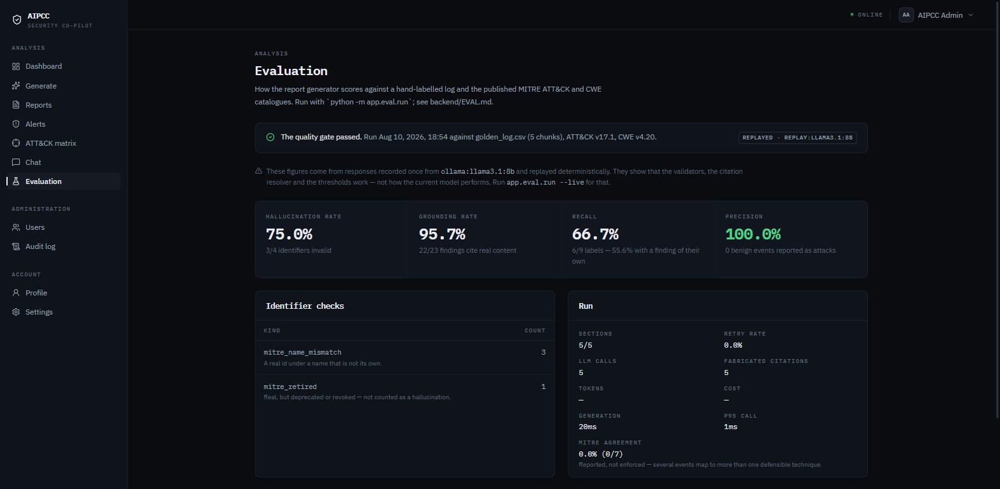
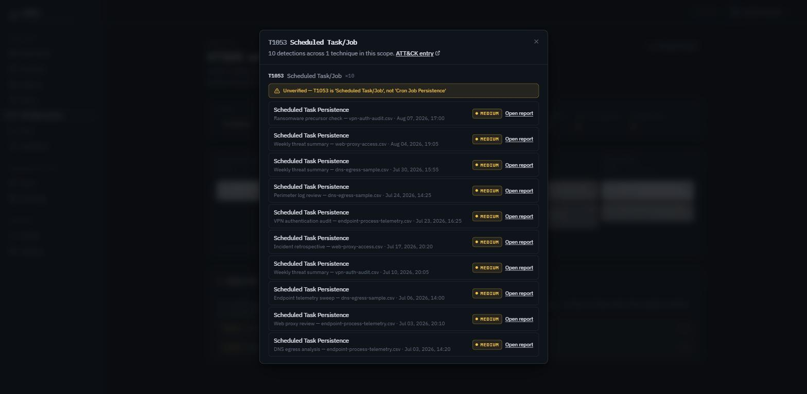
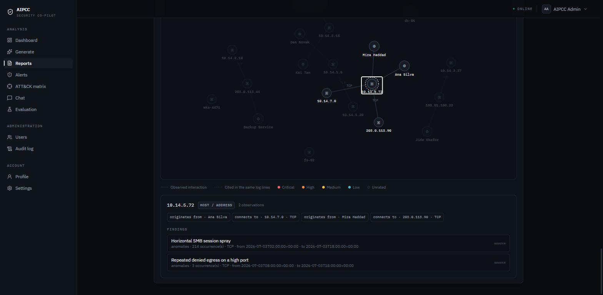
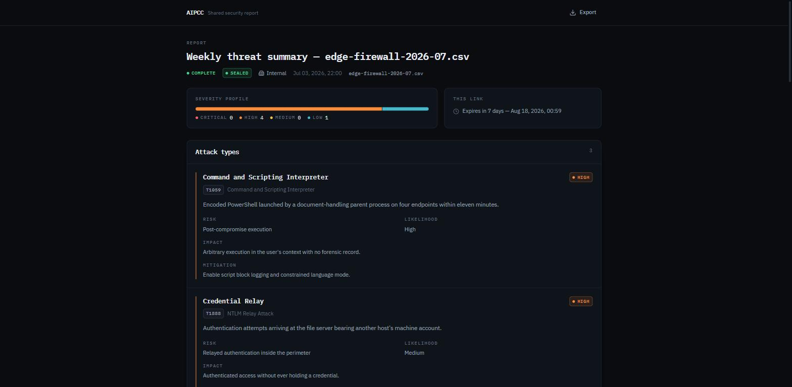

An AI cybersecurity co-pilot that writes a five-section incident report — then tells you how much of it to trust. Every finding cites the log rows it came from. Citations the model invented are flagged, not quietly dropped.
The Python generator is authoritative — it owns the canonical schema, the repair retry and the section-error contract. A bad section fails on its own instead of sinking the report.
CSV, JSON, TXT or LOG split deterministically. Row and line provenance is recorded here — the only moment it exists.
Each section retrieves its own chunks. The chunk key is Chroma's id, so re-ingest upserts instead of duplicating.
Attack types, risk, vulnerabilities, anomalies and timeline written at once — each with its own timer, not a shared one.
Parsed against one Pydantic schema. Rejected? One repair prompt. Still bad? A typed error — never a silent null.
Citations checked against what that section was actually shown. Invented ones are marked in the UI, not deleted.
Measured 2026-08-10 against gemini-2.5-flash on a 35-row hand-labelled golden log, scored against real published catalogues — ATT&CK Enterprise v17.1 (823 techniques) and CWE v4.20 (969 weaknesses), vendored and checksummed in-repo.
The CI cassette is deliberately bad. It replays
llama3.1:8b, which fabricated three technique names and cited five chunks it was never given. Those
scores aren’t a claim about output quality — they’re a frozen regression test on the validators. A cassette of
clean output would prove less: a validator that silently broke would send hallucination to zero and sail through
every bound.

REPLAYED badge and the amber line beneath it are
load-bearing: these figures describe the harness, not a model. The page says so before it shows a single number.So it gets two different treatments. Neither is ever silently discarded — that would make the matrix look cleaner than the output behind it.

T1053 “Cron Job Persistence”; the catalogue says “Scheduled Task/Job”. The cell carries
the catalogue’s name, never the model’s — rendering the model’s wording onto a matrix cell would print
the fabrication as a label.SHA-256 recorded at generation, re-verified on a schedule by the FIM engine. A report with a null hash is filtered out rather than failed — comparing against a null would mark every unsealable report TAMPERED, which is a false accusation, not a finding.
20 entities and 12 relationships built from typed columns already stored — no second extraction pass. j.doe is not jdoe: over-merging draws a relationship that was never observed, as confidently as everything else on the canvas.
bcrypt + JWT, ownership scoping that returns 404 not 403, constant-shaped login, and a progressive per-account delay instead of a lockout — because the textbook lockout hands anyone a one-request denial of service.
Every security-relevant action, enforced twice — no endpoint updates or deletes, and a Postgres trigger raises on UPDATE, DELETE and TRUNCATE. The trigger is the one that still holds after someone adds a “clean up old entries” endpoint.
PDF and DOCX walk one document model and never read a report field, so they cannot disagree about content. Share tokens are capabilities, not credentials — hashed, revocable, expiring, classification re-read on every open.
Orchestrator, FIM engine and DOCX generator — all executed against a running backend with live Groq / AbuseIPDB / VirusTotal credentials. n8n owns when and from where, never what is true: it hands sections to an endpoint that re-validates them.


No API key needed to browse — the demo seed creates six weeks of reports without calling a model.